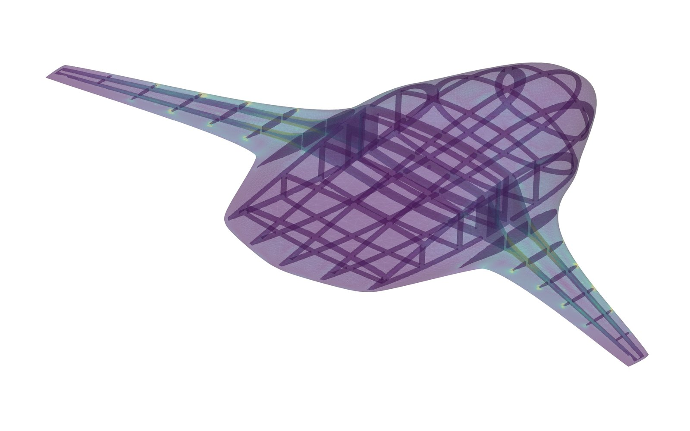

Nicholas Sung
I build machine learning that makes engineering simulation faster.
I'm a graduate researcher in Mechanical Engineering at MIT, advised by Prof. Faez Ahmed in the DeCoDE Lab. I work on scientific machine learning for engineering design: data-driven surrogates that speed up fluid and structural simulation, multiphysics datasets and benchmarks for aircraft design, and multi-fidelity methods that make better use of a limited number of expensive simulations. This work appears at ICML, ASME IDETC, and AIAA SciTech.
More about me
I lead BlendedNet and its extensions, built with MIT Lincoln Laboratory and nTop. BlendedNet is a public dataset of 999 blended wing body aircraft with 8,830 RANS simulations, and a neural model that predicts pressure and skin friction across the aircraft surface. BlendedNet++ grows this to 12,492 geometries, compares five surrogate models, and generates new aircraft shapes for a requested lift-to-drag ratio, which are then checked with CFD. BlendedNet++ Structures passes the predicted aerodynamic loads to finite element models of the internal structure, so a design can be chosen for low mass under stress and volume limits. With nTop, I organized a design challenge built on it for the ASME IDETC-CIE 2026 Student Hackathon. BlendedNet and BlendedNet++ have live demos on this site.
On the methods side, FIRE (ICML 2026 Spotlight) uses tabular foundation models to combine many inexpensive simulations with a few high-fidelity ones, and predicts both a value and its uncertainty without retraining for each problem. My current work extends this to full physical fields and to choosing which simulation to run next.
Before MIT, I was a research engineer at A*STAR's Centre for Frontier AI Research in Singapore, working on physics-informed neural networks, and earned a BEng in Aerospace Engineering from Nanyang Technological University with Highest Distinction. This fall I am the teaching assistant for MIT 2.156, AI and Machine Learning for Engineering Design.
The BlendedNet aircraft projects
BlendedNet and BlendedNet++ have live demos that run on my workstation at MIT, so you can use the real models from your browser.
 Open the live demo
Open the live demo
From the paper: pressure and skin friction from RANS, the model's prediction, and the absolute error.
 Open the live demo
Open the live demo
From the paper: fifteen of the 12,492 aircraft geometries in the dataset.

From the paper: stress on the internal structure of one design, from the finite element analysis.
Recent updates
- PaperBlendedNet++ Structures accepted, to appear at the AIAA SciTech Forum 2027 in Orlando, January 11–15.
- TeachingTeaching assistant for MIT 2.156 AI and Machine Learning for Engineering Design this fall.
- TalkPresented BlendedNet++ Structures at ASME IDETC-CIE 2026 in Houston.
- HackathonOrganized, with nTop, the BlendedNet++ Structures design challenge for the ASME IDETC-CIE 2026 Student Hackathon, and released its dataset and surrogate models.
- SpotlightFIRE presented at ICML 2026 in Seoul as a Spotlight.
- PaperFIRE appeared as a workshop paper at the ICLR 2026 Foundation Models for Science workshop in Rio de Janeiro.
- TalkPresented BlendedNet at the 3rd ERCOFTAC Workshop on Machine Learning for Fluid Dynamics in Amsterdam.
- PaperBlendedNet++ posted on arXiv.
- PaperBlendedNet presented at ASME IDETC-CIE 2025 in Anaheim.
Let's talk
I'm happy to talk about scientific machine learning, surrogate models for simulation, and multi-fidelity methods, whether for a research collaboration or a question about the datasets.
nicksung@mit.eduMIT Department of Mechanical Engineering · Cambridge, MA